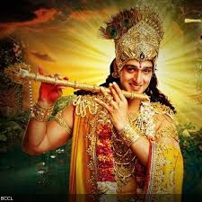
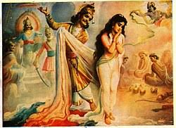
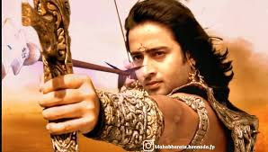
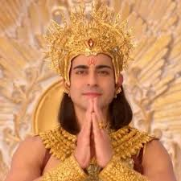

Mahabharatha Characters
TimeLine
Characters
Quotes

Krishna
Guide and charioteer to Arjuna, Krishna represents divine wisdom

Draupadi
The wife of the Pandavas, known for her strength and courage.

Arjuna
The greatest archer of his time, guided by Krishna during the war.

Karna
A great warrior and the secret eldest son of Kunti, loyal to Duryodhana.